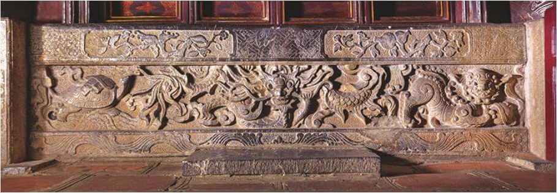
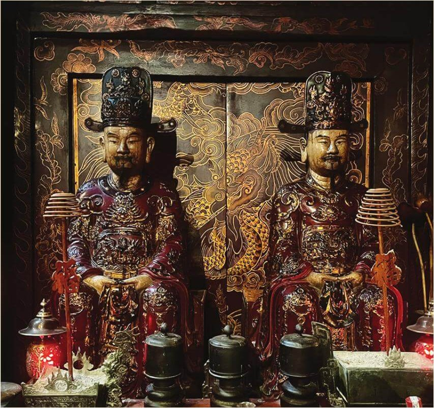

CỐ ĐÔ HOA LƯ
丁王庙介绍

丁先皇庙建于17世纪，坐落在昔日宫殿的旧基址上；该庙宇的建筑结构为“内工外国”字形。
庙宇的游廊是雕刻艺术的展示区。挡板上装饰着各类题材：龙狩猎、龙含珠、双龙朝“玉”字、双龙朝“万”字。

19世纪的石雕艺术在莲座形石柱础和石门槛上也得到了清晰的体现。凭借精湛的透雕和浮雕艺术，艺人们表现了许多装饰题材：“四灵”（龙、麟、龟、凤）、“四君子”（松、菊、竹、梅 或 梅、兰、菊、竹）、“龙戏水”、“龙含寿”、“八宝”等。特别是，艺人还雕刻了华闾的著名风景，如：东桥、苋桥、塔寺、横亭等。

内殿采用“工”字形结构，包括三座建筑：拜堂、烧香和正宫。
拜堂是供奉公同（诸神）的地方。这里悬挂着“正统始”的大字匾额，赞颂丁先皇是越南历史上第一位为民族开创自主、统一基业的人。这块匾额犹如一块金榜，将先帝的千秋功劳流传后世。
烧香区是供奉丁朝文武百官的地方，这部分的拱肩（Ván mê）上的木雕龙非常精美。这里的龙被雕刻成不同的活动场景，如捕食龙、巢中龙、群龙，雕工精湛，让我们看到了龙类多样的生活状态。
正宫内陈列着丁先皇、南越王丁琏、项郎太子和卫王丁璿的塑像。


丁先皇讳名丁部领，甲申年（924年）出生于大黄州大有村（今宁平省大黄社），他的父亲是丁公著——担任欢州刺史（今义安省）。父亲去世后，丁部领随母亲谭氏回到乡下生活，每天为叔叔放牛，并用芦苇作旗帜演习阵法。丁部领从小就表现出指挥才能，他与放牛的伙伴们拿芦苇当旗帜，把牛当马，用石头代替武器，将队伍分成两边进行模拟战斗。每次获胜，伙伴们都尊丁部领为首领，双手交叉当轿子抬着他，并在两旁举着芦苇花像天子仪仗一样簇拥着他。
历史的转折点发生在944年，吴权驾崩，吴朝逐渐衰亡，各地豪长纷纷崛起，各自割据一方，史称“十二使君之乱”。此时，迫切的要求是尽早结束割据局面以统一国家。完成这一历史使命的正是丁部领。丁部领招兵买马，以华闾洞作为最初的起义根据地。看到自己初期的力量还很薄弱，丁部领便与布海口的使君陈览结盟。陈览见部领相貌堂堂、具有军事奇才，便将全部兵权交给了他。丁部领将布海口的全部兵力带回，与华闾洞的义军合并。华闾义军的势力得到了飞跃式的发展。丁部领决定一面大举兴兵，一面招降各路使君。首战出兵，部领用计招降了使君范白虎。乘胜追击，他又率军击溃了使君杜景硕，随后神速进军击破使君阮超，并易如反掌地攻下了使君吴日庆的唐林城。丁部领所向无敌，威名远扬。三军将士尊其为“万胜王”。
968年，平定叛乱、统一国家后，丁部领登基称帝，定国号为大瞿越，定都华闾，“定百官，设六军，制度基本完备”。我国的正统自此开始。因此，丁部领称帝、制定独立的国号和年号，体现了民族极高的意志和自尊精神。后来，这种精神被李常杰确认为一条真理：“南国山河南帝居”。正如前定一般，随后的各个封建王朝：前黎、李、陈、黎、阮，都没有再称“王”或“节度使”，而是都称“帝”。因此，历史学家们肯定丁部领是开创正统基业的人，尊其为“丁先皇”。
为了巩固独立的统一局面，丁先皇建立了一套中央集权的封建国家机器。
971年，皇帝设定官阶品级，并为文武百官赐予冠服：阮匐被封为定国公，丁佃为外甲，黎桓为十道将军，刘基为都护府士师，吴真流被赐号为匡越大师……丁先皇的儿子们也都被封官，如：丁琏被封为南越王，丁璿被封为卫王。
为了保卫国家，丁先皇建立了拥有10道军队的强大武装力量，黎桓被封为十道将军。士兵们配备武器、服装，头戴“四方平顶”帽。强大的军队确保了国家的稳定。在农业方面：皇帝关心开荒建村，扩大沿海平原地区的耕地面积。吕唐——一位向丁部领投降的使君，曾在红河右岸地区进行开荒。在经济方面：国内已形成商品经济，并与国外有贸易往来，国家设有专门铸造钱币的作坊。丁先皇下令铸造了“太平兴宝”钱，这是我国的第一种铜钱。在文化艺术方面：丁先皇利用歌唱和演艺艺术为军队服务，激励士兵的士气。范氏珍女士——洪州人，教士兵唱歌，被封为优婆，后来她被尊称为嘲剧的祖师爷。因此，华闾国都是宫廷嘲剧艺术的中心之一。由此可见，在丁朝时期，国家的经济、文化和社会状况已进入稳定并向前发展。
丁先皇的一生和事业肯定了他是一位为统一国家、建立越南第一个中央集权封建国家立下汗马功劳的民族英雄。对于这项伟大的事业，历史学家黎文休评价道：“先皇才智过人，勇略冠世。当我国无主，群雄割据之时，一举扫平十二使君，然后开国建都，改称皇帝，设百官，建六军，制度几备。这大概是天意，因为我国又诞生了一位圣哲。”
己卯年（979年）十月，皇帝驾崩，享年56岁。丁先皇驾崩后，朝臣拥立6岁的幼主丁璿继位。但当时，国家又面临外敌入侵的灾祸。为了保卫江山社稷，杨云娥太后与三军将士拥立黎桓登基称帝，建立了前黎朝，续写了民族豪迈的历史篇章。